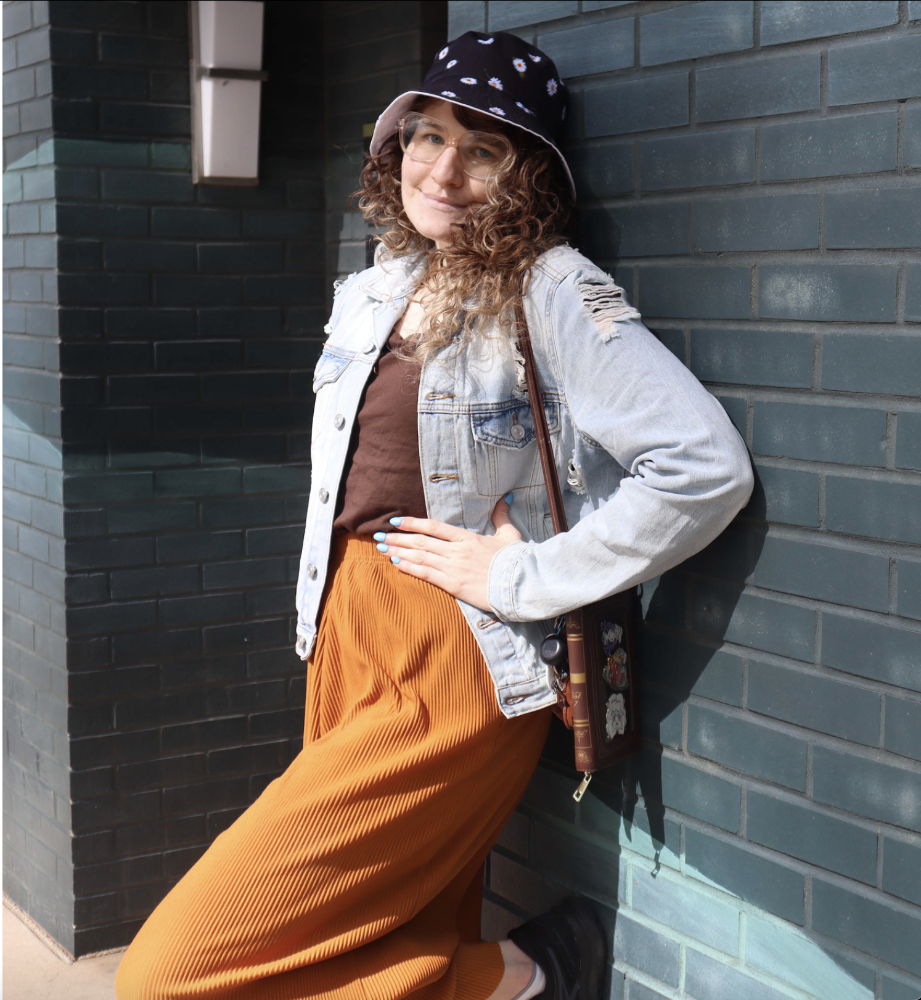

I am a graphic designer, photographer, and jewelry maker who loves turning creative ideas into real things. I have a wide variety of experiences including branding, editorial layouts, and digital graphics. I've been using Adobe Illustrator, Photoshop, and InDesign for many years to bring my design work to life with precision and creativity.
Outside of graphic design, I do underwater photography, which I see as a creative collaboration between myself and my subject.
Regardless of medium or discipline, I am all about creativity, storytelling, and bringing unique visions to life.
